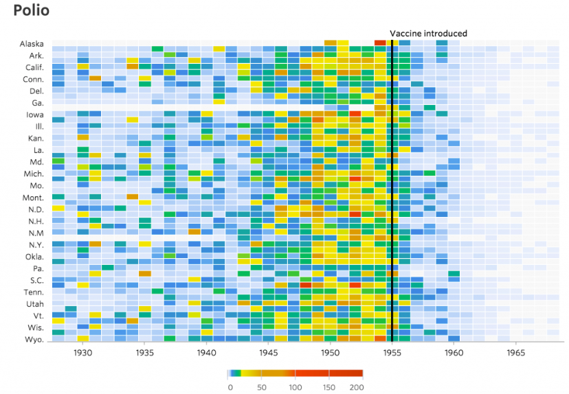

One example of a great visualization that I found was the chart above, which portrays the reach of the polio virus in
the United States, before and after the polio vaccine was introduced to the US. I would say this visual has
all five of the “Qualities of Great Visualizations” discussed in the reading.
- It is truthful. – The chart uses valid statistics from over four decades regarding who was infected with the virus.
It focuses on the years where the virus was most prominent (1928-1970), but does not exclude any information to prove
its point. I think this quality could be improved if all 50 states were represented in the chart, but I would guess they
are missing due to lack of hospital records or inadequate data to include states like Ohio or Kentucky.
- It is functional. – The chart portrays the data for us to interpret easily and correctly. While it is a little hard to
differentiate specific state lines, the graph isn’t about specific states. It is touching on how polio impacted people
all across the country and how it widespread the disease was entering the 1950s. The main point of this visualization
is to express how much of an impact the polio vaccine had on the containment of the disease and the clear black line down
the middle of the year 1955, makes it easy for the audience to tell the difference between before and after
the vaccine’s introduction. Following 1955, we can tell how quickly polio phased out of existence due to the power of medicine.
- It is beautiful. – A strong suit of this visualization is the color used to portray how many people where infected. The yellow,
orange, and red colors used as the disease spread more and more are a sharp contract to the blue and green colors used when
the disease was not as widespread in the states. This makes the visual visually appealing and easy to gather the main message
of the chart.
- It is insightful. – As a person who did not live through this time period, I do not know much about the polio virus besides
its debilitating symptoms and that it is no longer present in the US today. This chart, however, explains the widespread fear
of the disease in the 1940s and 1950s, and also clearly displays the positive effects of the vaccine for polio. It would be hard
to argue with this graph since it is so obviously shown that after the vaccine was introduced, infection levels dropped severely
and almost to zero within five years. This chart sparks that “wow” moment as we can be amazed by how quick and life-changing the
vaccine was.
- It is enlightening. – Finally, this visualization is centered around a controversial topic, but it makes its point and
leaves viewers with a clear representation of the positive effects of vaccines. The polio vaccine was introduced at a time
when the disease was spreading fast and nearly eradicated the disease in a short period of time and has since kept the virus
out of the public fear since the 1960s.
While I enjoy this visualization very much and think it represents all five qualities of great visualizations, no visualization
is ever perfect. Like I stated earlier, I wish all 50 states could be seen in the chart so we could get a clear view of polio’s
effect across the entire nation. There is also no label along the vertical axis besides the state. It might have been cut off in
the capture to posting on the website in which I found it, but I just assumed it was in thousands of people in each state who
contracted polio. Clarification in this realm would improve the audience’s interpretation greatly. Lastly, I think the chart
could have been titled better instead of just a concise “Polio”.
This visualization expands the island of knowledge immensely, providing quality data visualization about polio, its reach in
the decades shown, and the effect of its vaccine: information I had not known before, but that now makes me wonder if similar
charts exist for other viruses like measles, chicken pox, etc.